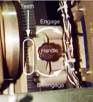
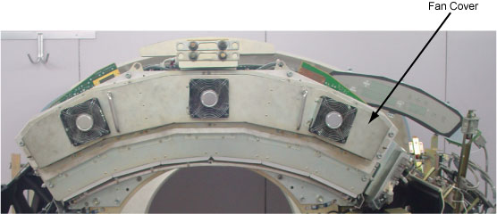
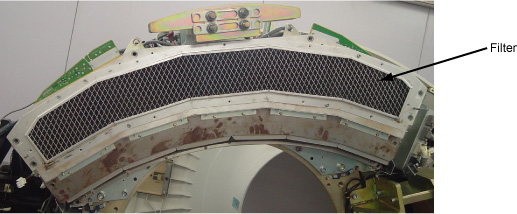
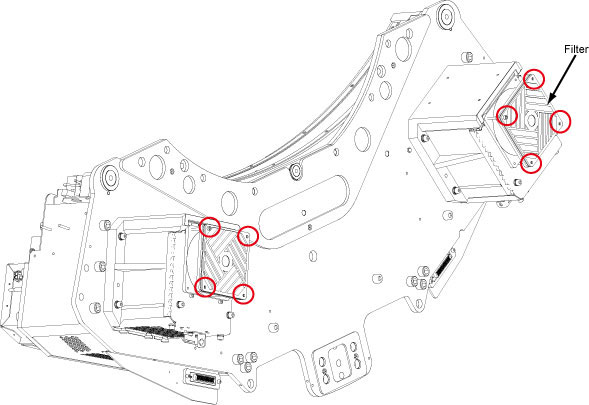

Operating Documentation
Direction 5181178-800, Rev# 16
BrightSpeed Select Service Methods Gen
Module Version 2.0, Version Date 7/23/12
Operating Documentation |
| Required Persons | Preliminary Reqs | Procedure | Finalization |
|---|---|---|---|
| 1 | Not Applicable | 20~40 min | Not Applicable |
Procedure Effectivity:
| Assembly: | GANTRY |
| Subassembly: | Pancake DAS |
| Purpose: | Clean or replace the PDAS Fan Filters |
| Last Revised: | April 2011 |
| NOTE: | This procedure is necessary to Maintain the cooling capacity of the PDAS. |
| Item | Qty | Effectivity | Part# | Manufacturer | |
|---|---|---|---|---|---|
| HEPA Vacuum cleaner | 1 | - | 46-297933P1 | - | |
| Standard FE Toolkit | 1 | - | - | - | |
Move the table to the lowest elevation.
| ||||
| Potential for Shock. | ||||
| Voltage may be present. | ||||
| Use proper lockout/tagout procedures. |
Turn off the facility power to PDU.
Remove the Gantry side covers.
Lift off the top cover.
Remove the "scan" window.
Remove the front cover.
Clean or replace Pancake Das Fan Filter
Rotate the Gantry until the DAS/DUCT Fan assembly is within serviceable reach.
Engage the rotational lock. See Illustration 1
Illustration 1: Rotational Lock

Disconnect the fan harness.
| ||||
| POTENTIAL FOR EQUIPMENT DAMAGE. USING VACUUM HOSE NEAR LIVE ELECTRONIC EQUIPMENT MAY CAUSE EQUIPMENT DAMAGE DUE TO STATIC. MAKE SURE EQUIPMENT IS TURNED OFF PRIOR TO VACUUMING NEAR ELECTRONIC EQUIPMENT. | ||||
Vacuum the dust from fans on the DAS fan cover
Remove the fan cover from DAS chassis. See Illustration 2
Vacuum the dust from the filter, See Illustration 3 or replace the filter if necessary, replacement procedure refer to PDAS ADB Filter Replacement
Illustration 2: DAS Fan Cover Removal

Illustration 3: DAS Filter

Clean or replace DIFB Fan Filter
Two DIFB Fans located behind the Gantry DAS frame, remove the DIFB fan filter by unscrewing its 4 screws on each fan. See Illustration 4
Illustration 4: DIFB Fan

Vacuum the dust filter on the DIFB Fan, or replace the filter if necessary
Restore the DIFB Fan Filter by screwing its 4 screws on each Fan.
Restore the fan harness connection.
Reassemble the Gantry covers and the scan window.
Restore the power.
No finalization steps.